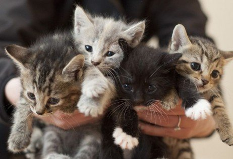
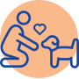

Salve Patinhas
Nós fazemos a conexão entre quem deseja adotar um pet com uma rede de mais de 105 ONGs e protetores parceiros.
E Como funciona?
Funciona assim: a Salve Patinhas disponibiliza espaços especialmente dedicados para a adoção no centro de suas lojas e as ONGs/protetores parceiros ficam responsáveis pelo processo e entrevista com os potenciais adotantes.
Juntos somos mais fortes!

Ache seu pet
Visite nosso espaço dedicado à adoção. Lá você irá conhecer os pets das ONGs/protetores parceiros para criar a conexão perfeita com o gato que busca um novo lar.
Formulário de Interesse
Faça a entrevista na hora nas lojas com um voluntário da ONG/protetor. Caso não haja um voluntário presente, não tem problema, basta preencher o formulário de interesse que disponibilizamos aqui que a ONG/protetor entrará em contato com você em até 48h.

Avaliação da adoção
A ONG/protetor parceiro irá fazer a análise do cadastro e perfil do adotante vs pet escolhido. Preenchendo os requisitos, você recebe a aprovação na hora (quando a entrevista é realizada na loja pelo voluntário da ONG/protetor) ou por telefone / e-mail caso seja preenchido o formulário online
Adoção Completa
Caso seja aprovado na hora pelo voluntário da ONG/protetor, você já pode levar seu pet para casa! Se enviou o formulário online, espere o contato e a aprovação. Com tudo certo, você busca seu pet em uma loja Petz no dia combinado com a ONG/protetor.